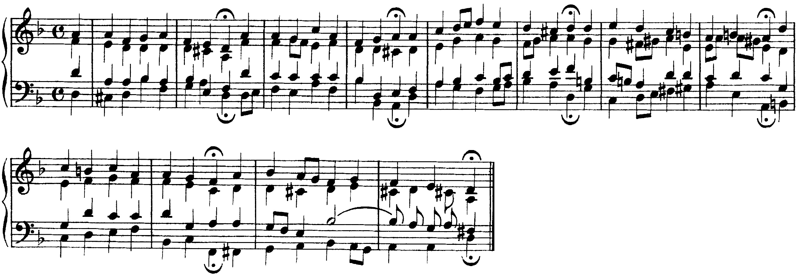

Sedici battute senza numeri, tre toni, una cadenza che inganna e una settima che si prepara sul basso legato: la forma della seconda prova.
La cadenza d’inganno, però, ha la funzione di posticipare una cadenza autentica e spesso precede il movimento cadenzale conclusivo.
D. D’Urso, Il linguaggio della musica, 4° anno, p. 40
Lezione di due ore. Seconda ora: Scrittura: una melodia da armonizzare nella forma della seconda prova · ora intera di interrogazioni. I compiti per casa sono alla fine.
La V4 (1/2) era una prova di sola scrittura nella forma della seconda prova, tipologia B: un basso senza numeri di quindici battute che modula ai toni vicini e torna, con la napoletana e una sesta eccedente, e una melodia che modula a un tono lontano; cinquanta punti ciascuno. La griglia è la stessa della V3 e sarà la stessa della V5: gradi, accordi comuni e M; accordi caratteristici al loro posto; condotta delle parti; soprano cantabile che chiude sulla tonica.
1. Il piano tonale. I toni raggiunti e il ritorno; per ciascuno l’accordo comune con la doppia cifratura, la sensibile del tono nuovo che sale, la cadenza che lo conferma, con la M nella battuta giusta.
2. Gli accordi alterati. La napoletana scritta come accordo maggiore sul secondo grado abbassato, di norma in primo rivolto, con il secondo grado abbassato che scende; la sesta eccedente con l’ortografia che ne mostra la risoluzione (il sesto grado abbassato al basso, il quarto alzato in una voce superiore) e le due note che si aprono sull’ottava della dominante.
3. La condotta. Quinte e ottave parallele, anche per moto contrario; quinte e ottave nascoste fra le estreme con il soprano di salto; sensibile raddoppiata o non risolta; settima non preparata o non risolta.
Rileggi il tuo foglio con la griglia. Correggi a margine ogni errore segnato riscrivendo la battuta intera, e accanto scrivi in una riga la regola violata, con il numero di battuta.

Le sei frasi del corale chiudono tutte con una corona, e il piano tonale si legge dalle cadenze: re minore (b. 2, V–i), semicadenza sulla dominante con il basso si♭–la, la cadenza frigia (b. 4), re minore (b. 6), la minore (b. 8, con il sol♯ al basso alla b. 7 e la settima di dominante mi–sol♯–si–re), fa maggiore (b. 10), e il ritorno a re con la terza maggiore nell’accordo finale (b. 12). È la forma di un basso della seconda prova: un tono d’impianto, due toni vicini (la dominante minore e il relativo maggiore) confermati da cadenze perfette, il ritorno. Il basso di Bach, letto da solo, contiene tutti gli indizi: le note lunghe e i salti di quinta alle fini di frase, il do♯ e il sol♯ che salgono di semitono, il si♭–la della semicadenza.
La settima di dominante in terzo rivolto, lezione 11, pp. 24–25; la cadenza d’inganno, p. 40; la settima di sopratonica in terzo rivolto, p. 66 · D. D’Urso, Il linguaggio della musica, 4° anno. La seconda prova, p. 270 · D. D’Urso, C. Bertolini, 5° anno.
Cadenza d’inganno. La dominante che risolve sul sesto grado invece che sulla tonica: ha «la funzione di posticipare una cadenza autentica e spesso precede il movimento cadenzale conclusivo» (D’Urso, 4° anno, p. 40). Nel basso si riconosce dal quinto grado che sale di grado al sesto, alla fine di una frase; la sensibile sale alla tonica, e nel VI si raddoppia la terza.
Settima preparata sul basso legato. Una nota del basso tenuta oltre la stanghetta, che poi scende di grado, è la settima di un accordo dissonante preparata nell’accordo precedente: sul quarto grado legato è la settima di dominante in terzo rivolto, V42, che risolve sul I⁶ («la settima al basso deve risolvere scendendo sul 3», pp. 24–25); sul primo grado legato è la settima di sopratonica in terzo rivolto, ii42, che risolve sul V⁶ o sul V65 (p. 66).
Armonizzare il basso legato con un accordo nuovo che ignora la legatura: per esempio un I64 sul do tenuto, con il do che poi scende al si senza essere una settima. La legatura è un’indicazione: la nota tenuta è la settima, l’accordo si costruisce intorno a lei e la sua risoluzione è già scritta nella nota seguente del basso.
Realizza il basso a quattro parti. Sotto il basso scrivi i gradi, la doppia cifratura degli accordi comuni e la M sulle cadenze che confermano i toni nuovi.
Le cadenze (note lunghe, salti di quinta alle fini di frase); le alterazioni (il diesis o il bequadro che sale è la sensibile del tono nuovo); il quinto grado che sale al sesto alla fine di una frase (inganno); la nota legata che poi scende (settima preparata). Poi gli accordi comuni, con la doppia cifratura; poi le voci.
Il corale BWV 101/7: re minore, la minore, fa maggiore, re maggiore, sei cadenze in dodici battute. La forma della seconda prova è la forma di un corale, senza la melodia data.
La lezione si chiude con il solfeggio: si canta il soprano della soluzione sopra il basso suonato al pianoforte, fermandosi a ogni cadenza per dire il tono. La lezione seguente lavora sulla melodia da armonizzare.
Tutta l’ora per le interrogazioni.
Tutta l’ora: quattro studenti, uno dopo l’altro. La classe segue le interrogazioni.
Ogni interrogazione: l’analisi di un passo e qualche domanda su brani e argomenti già fatti.
La melodia da armonizzare è nel Workbook.
Compiti per la prossima volta
Armonizza il canto a quattro parti.
Sul quaderno, a matita. La foto del lavoro finito va su Classroom. Nel Workbook: apri l’esercizio C5-U7-L5-01 ↗
Compiti per la prossima volta
n. 416 e n. 417 parlato · n. 418 e n. 419 cantato · n. 420 e n. 421 ritmico
Ogni pezzo a tempo, senza fermarti: il parlato a nomi, il cantato prendendo il primo suono dalla tastiera, il ritmico battendo la pulsazione.
Scrivi la melodia sul quaderno, in chiave di violino: otto battute in 2/2, si♭ maggiore. Il primo suono è si♭. Prima il riferimento, poi tutto due volte, ogni coppia di battute due volte, il collegamento 1–4, 3–6 e 5–8, e tutto per controllare.
Il riferimento: accordo di tonica e primo suono
Il dettato · otto battute
Le sezioni (riferimento, tutto, le coppie, il collegamento) si ascoltano una per una e si ripetono quanto serve; le fasi fanno la procedura della classe, con gli annunci e le pause, da qualunque punto.
Sul quaderno scrivi in testa la sigla C5-D-U07-L5. Si corregge all’inizio della prossima lezione.
Compiti per la prossima volta
Scrivi un contrappunto di quinta specie (il contrappunto fiorito) sopra il canto fermo, in modo ionico (finale do): dieci battute. Comincia su una consonanza perfetta, alla cadenza la sensibile sale alla finale, niente quinte e ottave consecutive.
Sul quaderno, con la sigla C5-CP-U07-L5 in testa; la foto va su Classroom.
Realizza a quattro parti il basso senza numeri: sedici battute in 4/4, fa maggiore. Trova tu l’accordo di ogni nota (la regola dell’ottava è il punto di partenza) e scrivilo sotto; poi il soprano, poi le voci interne. Accordi che puoi usare: tutto quello studiato, e una modulazione a un tono vicino. Il basso modula: trova dove, e in quale tonalità arriva.
Sul quaderno, con la sigla C5-BD-U07-L5 in testa; la foto va su Classroom.
Armonizza a quattro parti il canto dato: sedici battute in 4/4, la minore. Prima le cadenze, poi il basso per intero, e solo alla fine contralto e tenore. Accordi che puoi usare: tutto quello studiato, e una modulazione a un tono vicino. La melodia modula: trova dove, e in quale tonalità arriva.
Sul quaderno, con la sigla C5-CD-U07-L5 in testa; la foto va su Classroom.
Scritto: Una melodia di dodici battute (Workbook, esercizio C5-U7-L5-01), sul quaderno; la foto va su Classroom. Solfeggio dal quaderno di lettura: parlato n. 416, 417; cantato n. 418, 419; ritmico n. 420, 421 (a tempo, senza fermarsi). Dettato C5-D-U07-L5 dalla pagina della lezione (sezioni da ascoltare, o le fasi della procedura guidata), sul quaderno con la sigla. Contrappunto di quinta specie sul canto fermo (C5-CP-U07-L5). Basso senza numeri da realizzare a quattro parti (C5-BD-U07-L5). Canto dato da armonizzare a quattro parti (C5-CD-U07-L5).